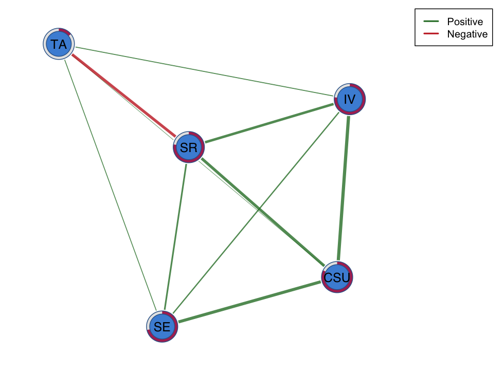
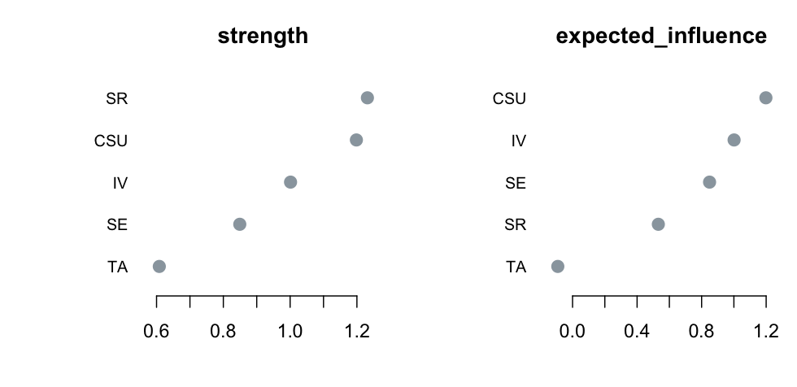
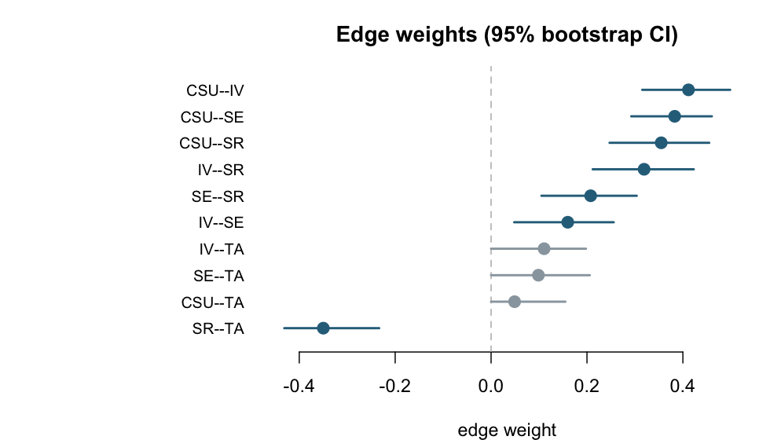

Clean-room, self-certifying estimation of cross-sectional psychometric network models in base R.
— by Mohammed Saqr
psychnets implements the principal cross-sectional estimators used in psychometric network analysis entirely in base R. The package provides correlation and partial-correlation networks, the EBIC-regularized Gaussian graphical model (graphical lasso), together with its nonparanormal and unregularized stepwise variants, information-filtering networks including the Triangulated Maximally Filtered Graph (TMFG) and Local–Global inverse covariance estimation, relative-importance networks, the Ising model for binary variables, and the mixed graphical model. Whereas these estimators are conventionally accessed through high-level R packages that delegate numerical optimization to compiled Fortran or C/C++ libraries, psychnets reimplements the complete estimation procedures directly in R. In particular, graphical lasso estimation is commonly performed through qgraph and bootnet, which invoke the Fortran implementation provided by glasso, while Ising and mixed graphical models are typically estimated through IsingFit and mgm, both of which rely on the compiled optimization routines of glmnet. psychnets invokes none of these packages or their underlying compiled numerical libraries. Its only package dependencies are the standard R distributions stats, parallel, graphics, and grDevices.
For every regularized estimator, psychnets reports a numerical certificate of optimality in the form of the Karush–Kuhn–Tucker (KKT) residual associated with the convex optimization problem defining the estimator. The KKT residual quantifies the degree to which the necessary first-order optimality conditions are satisfied and therefore provides a direct measure of convergence. Residual values approaching zero indicate that the numerical solution is effectively stationary with respect to the objective function. Because this diagnostic is computed directly from the fitted solution, its evaluation is independent of external optimization software and does not require comparison with reference implementations.
The implementation philosophy of psychnets is based on four complementary design principles. First, the estimation procedure is fully transparent, as both the statistical methodology and the numerical optimization algorithms are implemented explicitly in R, allowing every computational step to be inspected and reproduced without reference to opaque compiled libraries. Second, estimation is reproducible because convergence behaviour is determined by user-accessible numerical criteria rather than by implementation-specific tolerances embedded within precompiled binaries. Third, the package maintains a minimal dependency structure by avoiding external numerical libraries such as glasso, glmnet, qgraph, and Matrix, together with their associated compiled dependency chains, including Rcpp and RcppArmadillo. Finally, estimation is directly auditable because every regularized solution is accompanied by an optimality certificate that quantifies its numerical accuracy with respect to the objective function being minimized. Consequently, the correctness of an estimated network can be assessed directly from the fitted model itself rather than inferred through agreement with an independent software implementation.
Because each optimization problem is solved to numerical stationarity and model selection is performed using the standard formulation of the Extended Bayesian Information Criterion (EBIC), network recovery reflects the theoretical properties of the estimator rather than artefacts of incomplete optimization. As a consequence, edge selection is not influenced by premature termination of the numerical algorithm, thereby avoiding the inclusion of edges that may arise solely from insufficient convergence of the underlying optimization procedure.
Validation was performed using both simulated data with known generating models and published psychometric datasets to verify the correctness of every implemented estimator. Across all methods, psychnets reproduces the established reference implementations to the numerical precision attainable by those packages, with remaining differences attributable to floating-point arithmetic and solver convergence tolerances. For the EBIC graphical lasso, this practical limit is determined by the convergence criterion of the underlying glasso implementation used by qgraph, which is approximately (10^{-4}). psychnets instead solves each optimization problem to substantially tighter tolerances and reports the Karush–Kuhn–Tucker residual for every regularized fit, providing an independent numerical certificate that the returned solution satisfies the optimality conditions of the estimator.
Installation
# from CRAN (once released)
install.packages("psychnets")
# development version
# install.packages("pak")
pak::pak("mohsaqr/psychnets")A worked example
psychnets estimates an EBIC-regularized Gaussian graphical model from data or a correlation matrix and reports its certificate on printing. The example uses SRL_GPT, one of the self-regulated-learning datasets shipped with the package (five MSLQ constructs).
library(psychnets)
net <- ebic_glasso(SRL_GPT) # EBIC graphical lasso of the five MSLQ constructs
net # edges, lambda, gamma, and the KKT residual
#> <psychnet> glasso network
#> nodes: 5 edges: 10 (undirected)
#> lambda: 0.00861 gamma: 0.5
#> optimality (KKT residual): 2.21e-10
net_centralities(net) # strength and expected influence, tidy
#> node strength expected_influence
#> 1 CSU 1.1984512 1.19845117
#> 2 IV 1.0012765 1.00127649
#> 3 SE 0.8492185 0.84921854
#> 4 SR 1.2314317 0.53172852
#> 5 TA 0.6082238 -0.09147935The network is drawn through cograph::splot():
cograph::splot(net, layout = "spring", edge_labels = FALSE, legend = TRUE)
The certificate is available directly, so the distance of the fit from the unique optimum of its objective can be read without an external reference:
glasso_kkt(net$precision, net$cor_matrix, net$lambda)
#> [1] 2.213367e-10Models and methods
The estimators, each fitted in base R and — where regularized — self-certified:
| Verb | Model | Data |
|---|---|---|
cor_network() |
correlation network (with significance thresholding) | continuous |
pcor_network() |
partial-correlation network | continuous |
ebic_glasso() |
EBIC-regularized Gaussian graphical model (graphical lasso) | continuous |
huge_network() |
nonparanormal Gaussian graphical model | continuous |
ggm_modselect() |
unregularized stepwise Gaussian graphical model | continuous |
tmfg_network() |
Triangulated Maximally Filtered Graph | continuous |
logo_network() |
Local–Global sparse inverse covariance | continuous |
relimp_network() |
relative-importance network (LMG / Shapley) | continuous |
ising_fit() |
Ising model, L1-penalized | binary |
ising_sampler() |
Ising model, unregularized | binary |
mgm_fit() |
mixed graphical model | Gaussian + binary |
psychnet() |
unified front door routing all of the above | — |
The framework verbs operate on any fitted network, and on event logs and grouped data through psychnet():
| Verb | Purpose |
|---|---|
net_centralities(), net_bridge(), net_edge_betweenness()
|
node, bridge, and edge centrality |
net_clustering(), net_smallworld()
|
weighted clustering coefficients and the small-world index |
net_predict() |
node predictability (variance explained; classification accuracy) |
net_boot(), difference_test()
|
bootstrapped accuracy and within-network difference tests |
net_stability(), casedrop_reliability(), network_reliability()
|
case-dropping stability and split-half reliability |
net_compare() |
the permutation Network Comparison Test |
redundancy(), net_aggregate()
|
redundant-node detection and community aggregation |
psychnet() additionally constructs networks directly from event logs — one row per action — computing action frequencies and separating within- from between-actor variation, and estimates a separate network per group on request. Every fitted network inherits the cograph plotting classes, and each result object carries a base-graphics plot() method.
Node centrality plots directly from its result object:
plot(net_centralities(net))
net_boot() resamples the data, re-estimates, and returns bootstrapped edge-weight confidence intervals; edges whose interval excludes zero are drawn in the accent colour:

Self-certification
psychnets treats correctness as a measured quantity rather than as agreement with a second implementation. For a Gaussian graphical model, glasso_kkt() returns the stationarity residual of the graphical-lasso objective; because that objective is strictly convex its minimizer is unique, so a near-zero residual certifies the global optimum with no reference solver involved. The nodewise Ising and mixed graphical models are certified analogously through the penalized-likelihood score residual. External packages (qgraph, IsingFit, mgm, bootnet) serve as cross-checks at independent-solver precision, never as the definition of correct.
Validation
psychnets is checked against the established reference packages in two ways, both reproducible from a fixed set of package versions.
Estimator equivalence versus the reference packages
Each model is fitted by psychnets and by the package that implements it on the same data; equivalence is understood as the same model, each solved to its own optimum — the edge set is identical and the residual difference is at solver precision, while the psychnets KKT residual certifies its own optimality.
psychnets estimator |
Reference package | Data | Observed difference |
|---|---|---|---|
ebic_glasso() |
qgraph::EBICglasso 1.9.8 |
AR(1) chain, n = 1000, p = 8 | edge set identical; max |Δ| = 2.2e-06; KKT = 1.5e-10 |
ising_fit() |
IsingFit::IsingFit 0.4 |
AR(1) latent, n = 2000, p = 6, binarized | edge set identical; max |Δ| = 4.6e-03; threshold r = 1.000 |
mgm_fit() |
mgm::mgm 1.2.15 |
mixed Gaussian + binary, n = 3000, p = 4 | edge set identical; max |Δ| = 1.6e-03; KKT = 1.1e-09 |
cor_auto() |
psych::polychoric / qgraph::cor_auto
|
four-level Likert, n = 1000, p = 4 | max |Δ| = 2.0e-05 (psych), 1.7e-07 (qgraph) |
.pbivnorm() (bivariate normal CDF) |
mvtnorm::pmvnorm 1.2 |
five (h, k, ρ) points | max |Δ| = 5.6e-17 |
Validation databases (published instruments)
On real questionnaire and ability data the psychnets EBIC graphical lasso reproduces the qgraph edge set exactly — structure agreement equals 1 on every instrument, with a largest edge-weight difference of 0.008 — and the Ising model matches IsingFit on binary batteries. The instruments, all loaded from installed CRAN packages so the comparison downloads nothing:
| Instrument | Source | Items | n | Reference | max |Δ| |
|---|---|---|---|---|---|
qgraph::big5 |
Dolan, Oort, Stoel & Wicherts (2009) | 240 | 500 | qgraph | 3.6e-05 |
psych::bfi |
Revelle, Wilt & Rosenthal (2010) | 25 | 2760 | qgraph | 3e-06 |
psych::sat.act |
Revelle (psych) | 6 | 700 | qgraph | 2e-06 |
psychTools::msq |
Revelle & Anderson (1998) | 50 | 3876 | qgraph | 1.2e-05 |
psychTools::epi.bfi |
Eysenck & Eysenck (1964) | 13 | 231 | qgraph | 8.0e-03 |
psychTools::epi |
Eysenck Personality Inventory | 50 | 3476 | qgraph | 6e-06 |
psychTools::sai |
Spielberger State Anxiety | 22 | 5282 | qgraph | 3.5e-05 |
psychTools::tai |
Spielberger Trait Anxiety | 21 | 3016 | qgraph | 7e-06 |
psychTools::spi |
Condon (2018), SAPA Inventory | 50 | 4000 | qgraph | 1.6e-05 |
psychTools::blot |
Bond’s Logical Operations Test | 35 | 150 | qgraph | 0 |
mgm::Fried2015 |
Fried et al. (2015) | 11 | 515 | qgraph | 8e-06 |
mgm::PTSD_data |
McNally et al. (2015) | 6 | 344 | qgraph | 1.9e-05 |
mgm::B5MS |
Haslbeck & Waldorp (mgm) | 5 | 500 | qgraph | 0 |
mgm::symptom_data |
Haslbeck & Waldorp (mgm) | 48 | 1476 | qgraph | 1.5e-05 |
NetworkToolbox::neoOpen |
Christensen, Cotter & Silvia (2019) | 48 | 802 | qgraph | 4e-06 |
networktools::depression |
Jones (networktools) | 9 | 1000 | qgraph | 6.5e-05 |
networktools::social |
Jones (networktools) | 16 | 350 | qgraph | 7e-06 |
EGAnet::optimism |
Golino & Christensen (EGAnet) | 10 | 272 | qgraph | 6e-06 |
EGAnet::intelligenceBattery |
Golino & Christensen (EGAnet) | 50 | 1152 | qgraph | 2.2e-05 |
psychTools::ability |
Revelle; ICAR ability items | 16 | 1248 | IsingFit | 5.9e-02 |
psychTools::iqitems |
Condon & Revelle; ICAR | 11 | 1523 | IsingFit | 1.2e-02 |
Where the truth is known — data drawn from a known sparse precision matrix — the psychnets and qgraph estimators recover the generating structure at the same F-measure. The full derivation, the worked graphical-lasso case, and the complete tables are given in the package’s technical report.
Learn more
- Articles — worked tutorials for the Gaussian graphical, information-filtering, Ising, mixed, and relative-importance models, network reliability, and building networks from event data.
- Website — https://pak.dynasite.org/psychnets
- Source — https://github.com/mohsaqr/psychnets